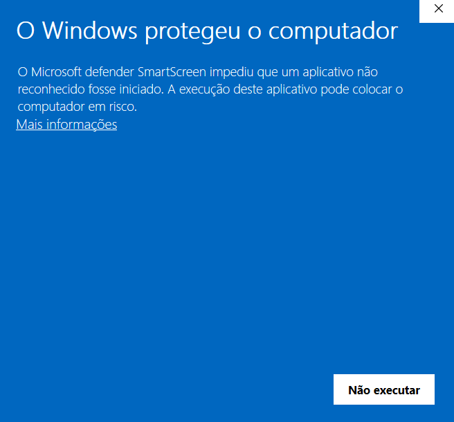
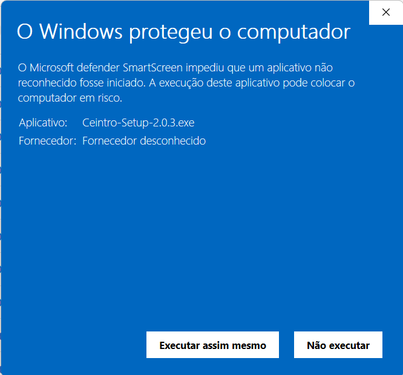
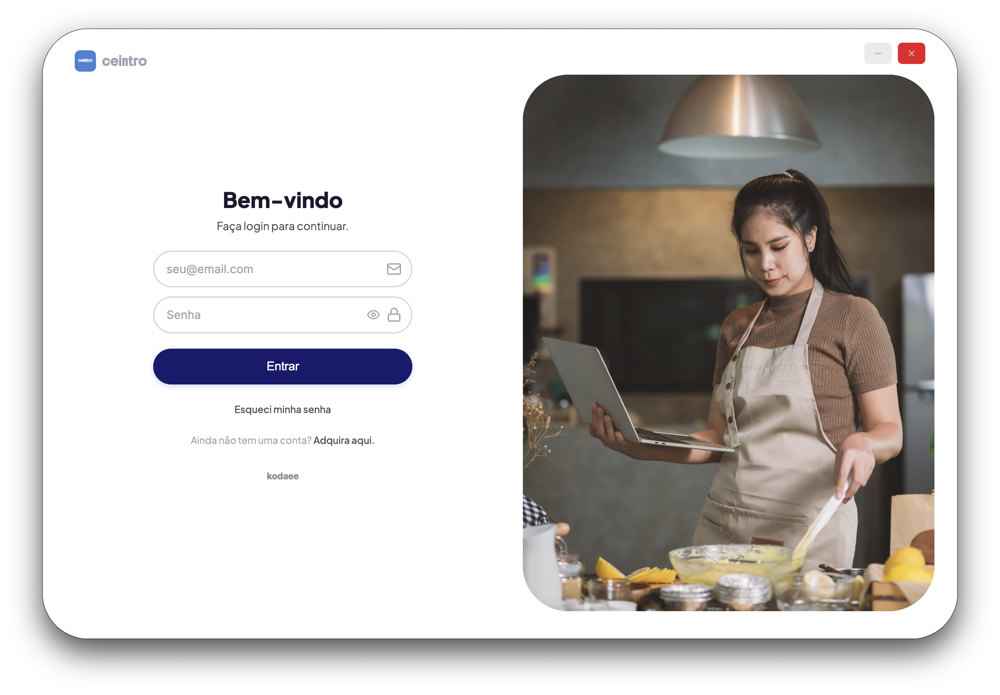

Requisitos do Sistema (Windows)
Antes de começar, verifique se o seu computador atende aos requisitos mínimos para um bom desempenho:
Instalação e Login
Guia de Instalação no Windows
Siga os passos abaixo para instalar o Ceintro:
Baixe o Instalador
Após a compra do produto, clique no link de download que você recebeu e seu download irá iniciar automaticamente.
Execute o Arquivo
Localize o arquivo Ceintro-Setup.exe na sua pasta de Downloads e dê um clique duplo.
Alerta de Segurança do Windows
Em alguns casos, o Windows pode ter dificuldade para ler o certificado do instalador e exibir um aviso de segurança. Não se preocupe, é seguro continuar. Clique em Mais Informações e depois em Executar assim mesmo.


Assistente de Instalação
Siga as etapas do instalador conforme as imagens abaixo. Recomendamos manter as opções padrão.
Login no Sistema
Na primeira vez que abrir o sistema, você precisará fazer login com suas credenciais:
Insira suas credenciais
Você receberá seu usuário e senha por e-mail. Preencha os campos na tela de login do sistema.
Esqueceu a senha?
É indicado que você redefina sua senha no primeiro acesso, preencha o campo de e-mail e clique em Esqueci minha senha. Você receberá um e-mail com as instruções para criar uma nova senha.

Funcionalidades do App
Veja como utilizar as principais funcionalidades do Ceintro nos vídeos abaixo:
Cadastrando um produto do zero
Detalhes de custos e como duplicar receitas e insumos
Precificando um item do estoque
Ajustando as taxas das plataformas
Como gerenciar categorias
Cadastrando um pedido do zero
Como Atualizar o Sistema
Cada vez que o sistema é aberto, ele verifica se há novas atualizações, por isso é importante fechar o sistema quando finalizar o seu uso. Caso deseje, também é possível atualizar o sistema manualmente:
- Vá no menu à esquerda e clique em Configurações (Engrenagem).
- Vá na aba Atualizar.
- Clique em Verificar atualizações.
- O sistema irá procurar por novas atualizações, caso encontre irá baixar automaticamente. Após finalizado clique no botão Fechar e Atualizar.
- O sistema será fechado e você verá o instalador do Windows. Ao finalizar a instalação o sistema abrirá automaticamente.
Como Exportar e Importar os Dados
Caso você queira compartilhar offline seus dados ou manter uma cópia dos mesmos na sua máquina ou qualquer outro lugar, você tem a opção de exportar e importar seus dados.
Como exportar
- Vá no menu à esquerda e clique em Configurações (Engrenagem).
- Clique em Exportar. Um arquivo chamado dados.json será exportado.
Como importar
- Clique em Importar e escolha o arquivo .json exportado anteriormente.
Backup
A cada semana um backup automático é realizado pelo sistema para garantir que seus dados estão salvos. Também é possível realizar o backup manualmente, assim como recuperar o backup a qualquer momento.
Como realizar o backup manualmente
- Vá no menu à esquerda e clique em Configurações (Engrenagem).
- Na aba Dados clique em Fazer Backup.
- Você verá uma barra de progresso. Aguarde a barra finalizar e você verá a mensagem Backup realizado com sucesso!
- A data e horário do último backup será alterado para a data e horário atual.
Como recuperar o backup
Atenção: Recuperar o seu backup significa substituir os dados atuais pelos dados que foram salvos no backup na data em que foi realizado. Em outras palavras, seus dados atuais serão apagados e substituídos pelo backup.
- Vá no menu à esquerda e clique em Configurações (Engrenagem).
- Na aba Dados confirme o horário e data do último backup antes de continuar. Seus dados serão substituídos para os dados presentes na data e horário do último backup.
- Na aba Dados clique em Recuperar Backup.
- Você verá uma barra de progresso. Aguarde a barra finalizar e você verá a mensagem Recuperação finalizada com sucesso!
Sincronizar via Google Drive
Tenha uma conta no Google Drive e tenha o Google Drive instalado na sua máquina. Para isso baixe o Google Drive para computador.
- Após ter instalado o Google Drive, crie uma pasta específica para guardar os dados do Ceintro. Você pode chamá-la de ceintro_dados ou qualquer nome que preferir.
- Vá no menu à esquerda e clique em Configurações (Engrenagem).
- Vá na aba Sincronizar.
- Clique em Escolher Pasta e selecione a pasta criada anteriormente dentro do seu Google Drive.
- Pronto! Agora seus dados serão salvos nesta pasta.
Perguntas Frequentes (FAQ)
O programa não abre após a instalação. O que fazer?
Tente clicar com o botão direito no ícone e selecionar "Executar como Administrador". Verifique também se seu antivírus não bloqueou o arquivo por engano.
Onde meus arquivos ficam salvos?
Por padrão, os arquivos são salvos na pasta C:\Users\{usuario}\AppData\Local\Programs\precifica-gestor.
Suporte Técnico
Se precisar de ajuda extra, nossa equipe está à disposição: